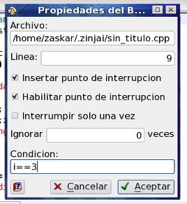

Los puntos de interrupción, pueden tener una condición asociada, de forma que el flujo del programa, si pasa varias veces por la misma línea, sólo se detenga si se cumple dicha condición. Por ejemplo, para detenerse sólo en la cuarta iteración del bucle, la condición sería i==3. Para definir una condición, haga click sobre el punto de interrupción (en el margen) manteniendo presionada la tecla Shift. Pruebe acceder al diálogo de opciones del punto de interrución (para continuar con el tutorial no es necesario que definan la condición).

Nota: Existen otras dos formas de detener el programa sin colocar un punto de interrupción: una es generar una señal (hay un botón de pausa en la barra de herramientas de ZinjaI para GNU/Linux, o se puede forzar presionando Ctrl+C en la consola de ejecución en Windows); la otra es generando un error (por ejemplo, acceso a una posición de memoria inválida).
Volver... Continuar...